9장 설문조사 분석#
1. 데이터 입력#
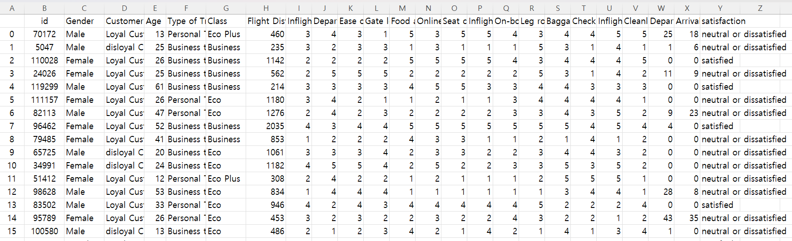
Gemini 설명#
이 데이터셋은 항공사 승객 만족도 조사 데이터이다. 각 승객의 인적 사항, 비행 정보, 그리고 다양한 서비스에 대한 만족도 평가가 포함되어 있으며, 최종적으로 승객이 만족했는지 여부를 예측하는 분류 문제에 사용될 수 있다.
데이터의 주요 특징은 다음과 같다.
1. 데이터 구조#
총 데이터 수: 103,904개
변수(컬럼) 수: 25개
타겟 변수:
satisfaction(‘neutral or dissatisfied’ 또는 ‘satisfied’의 이진 분류)
2. 변수 설명#
승객 인적 사항 (Demographics)#
Gender: 성별 (Male, Female)Customer Type: 고객 유형 (Loyal Customer, disloyal Customer)Age: 승객 나이 (7세~85세 분포)
비행 정보 (Flight Information)#
Type of Travel: 비행 목적 (Business travel, Personal Travel)Class: 좌석 등급 (Business, Eco, Eco Plus)Flight Distance: 비행 거리
서비스 만족도 평가 (Services)#
14개의 서비스 항목에 대해 0~5점 척도로 평가된 점수이다.
Inflight wifi service(와이파이),Food and drink(식음료),Seat comfort(좌석 편안함),Inflight entertainment(기내 엔터테인먼트),On-board service(탑승 서비스),Leg room service(다리 공간),Cleanliness(청결도) 등이 포함된다.
지연 정보 (Delays)#
Departure Delay in Minutes: 출발 지연 시간(분)Arrival Delay in Minutes: 도착 지연 시간(분)
3. 데이터 특이사항#
Arrival Delay in Minutes변수에 310개의 결측치(NaN)가 존재한다. 분석 시 이를 제거하거나 평균/중앙값 등으로 대체하는 전처리가 필요할 수 있다.id와Unnamed: 0은 단순 식별자이므로 모델링 시 제외하는 것이 일반적이다.서비스 만족도 점수 중 0점은 ‘평가 없음’을 의미할 가능성이 있으므로 확인이 필요하다.
2. 만족도 분석#
Gemini 분석#
만족도 분석 결과는 다음과 같다.
1. 전반적인 만족도 현황#
전체 데이터 중 만족한 승객과 불만족(또는 중립) 승객의 비율은 대체로 균형을 이루고 있으나, 불만족 비율이 약간 더 높게 나타나는 경향이 있다.
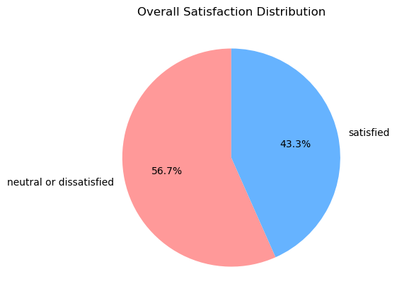
2. 주요 영향 요인 분석#
좌석 등급 (Class):#
Business: 만족도가 매우 높으며, 만족한 승객의 비율이 불만족한 승객보다 월등히 높다.
Eco / Eco Plus: 불만족 비율이 압도적으로 높다. 이코노미 클래스 승객들의 경험 개선이 전체 만족도 향상의 핵심 과제이다.
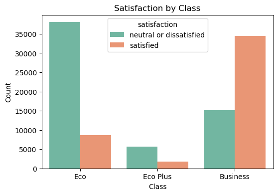
여행 목적 (Type of Travel):#
Business travel: 업무 목적의 여행객은 만족도가 상대적으로 높다.
Personal Travel: 개인 여행객은 불만족 비율이 매우 높다. 이는 개인 여행객들이 가격 민감도가 높거나, 이코노미 클래스를 주로 이용하기 때문일 가능성이 크다.
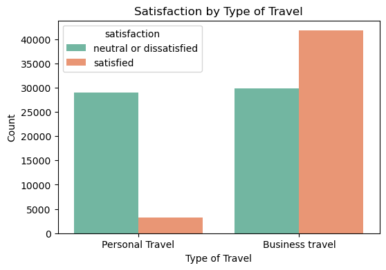
고객 유형 (Customer Type):#
Loyal Customer: 충성 고객의 만족도 비율(약 47.7%)이 비충성 고객(약 23.7%)보다 2배 이상 높다. 충성 고객 관리 프로그램이 효과적으로 작동하고 있거나, 만족도가 높은 고객이 충성 고객으로 남는 선순환 구조일 수 있다.
3. 서비스 항목별 상관관계 (Correlation Analysis)#
만족도와 가장 강한 양의 상관관계를 보이는 서비스 항목들은 다음과 같다. (상관계수 기준)
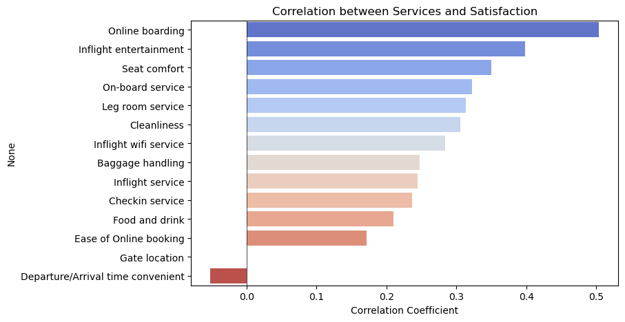
Online boarding (0.50): 온라인 탑승 수속의 편의성이 만족도에 가장 큰 영향을 미친다. 앱이나 웹사이트의 UI/UX 개선이 중요함을 시사한다.
Inflight entertainment (0.40): 기내 엔터테인먼트 시스템의 품질이 만족도와 직결된다.
Seat comfort (0.35): 좌석의 편안함은 장거리 비행 등에서 중요한 요소로 작용한다.
On-board service (0.32): 승무원의 서비스 태도 및 품질 또한 주요 요인이다.
Leg room service (0.31): 다리 공간의 여유도 만족도에 영향을 준다.
반면, Departure/Arrival time convenient (출도착 시간 편의성)이나 Gate location (게이트 위치) 등은 상대적으로 만족도와의 상관관계가 낮게 나타났다. 이는 이러한 요소들이 항공사의 통제 범위를 벗어나거나 승객들이 어느 정도 감수하는 부분이기 때문일 수 있다.
4. 결론 및 제언#
이코노미 클래스 서비스 개선: Eco 및 Eco Plus 등급 승객의 불만족 비율이 매우 높으므로, 이들에 대한 서비스(특히 좌석 편안함, 기내식 등) 개선이 시급하다.
디지털 경험 강화:
Online boarding이 만족도와 가장 높은 상관관계를 보이므로, 모바일 앱이나 웹사이트의 체크인 프로세스를 더욱 간편하고 직관적으로 만드는 것이 저비용 고효율의 만족도 제고 전략이 될 수 있다.충성 고객 유지 및 비충성 고객 전환: 비충성 고객의 낮은 만족도를 개선하기 위해 첫 이용 고객에 대한 혜택이나 서비스 차별화를 고려해야 한다.
3. 문항별 기술적 분석#
Gemini 분석#
다음은 모든 조사 항목에 대한 기술적 분석 결과이다.
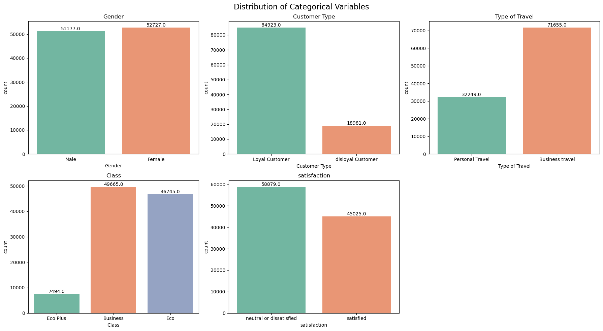
1. 범주형 변수 분석 (인적 사항 및 비행 정보)#
항목 |
최빈값 (Top) |
빈도 (Freq) |
설명 |
|---|---|---|---|
Gender |
Female |
52,727 (50.7%) |
남녀 성비는 거의 균등하다. |
Customer Type |
Loyal Customer |
84,923 (81.7%) |
충성 고객의 비중이 압도적으로 높다. |
Type of Travel |
Business travel |
71,655 (69.0%) |
업무 목적 여행객이 개인 여행객보다 많다. |
Class |
Business |
49,665 (47.8%) |
비즈니스석 이용객이 가장 많고, Eco(44.2%), Eco Plus(7.2%) 순이다. |
Satisfaction |
Neutral/Dissatisfied |
58,879 (56.7%) |
불만족(또는 중립) 승객이 만족한 승객보다 약간 더 많다. |
2. 수치형 변수 분석 (나이, 거리, 지연 시간)#
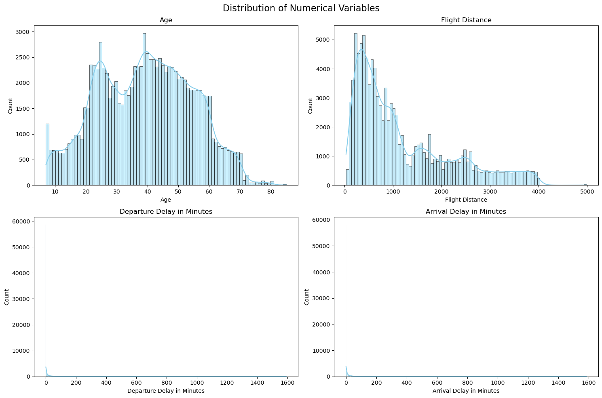
항목 |
평균 (Mean) |
중앙값 (Median) |
최대값 (Max) |
비고 |
|---|---|---|---|---|
Age |
39.4세 |
40.0세 |
85.0세 |
승객 연령대는 정규분포와 유사하게 고르게 분포되어 있다. |
Flight Distance |
1,189 |
843 |
4,983 |
단거리 비행의 빈도가 높다 (오른쪽 꼬리가 긴 분포). |
Departure Delay |
14.8분 |
0.0분 |
1,592분 |
대부분 지연이 없으나(0분), 일부 극단적인 지연 사례가 존재한다. |
Arrival Delay |
15.2분 |
0.0분 |
1,584분 |
출발 지연과 유사한 분포를 보인다. |
3. 서비스 만족도 항목 분석 (0~5점 척도)#
각 서비스 항목에 대한 평점 분포는 다음과 같다. ‘0점’은 해당 서비스가 제공되지 않았거나 이용하지 않음을 의미할 가능성이 높다.
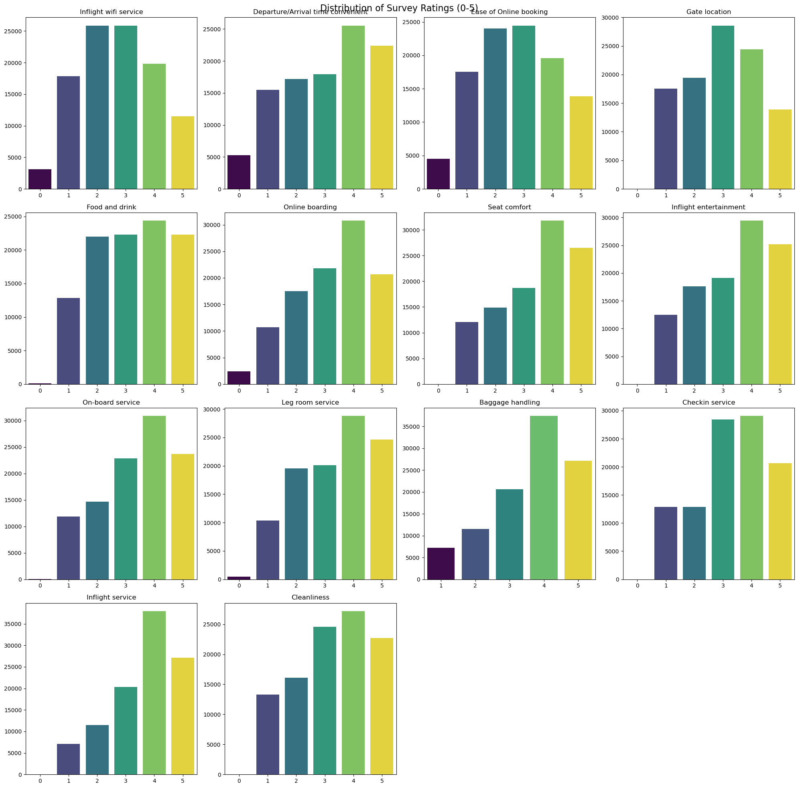
항목 |
count |
mean |
std |
min |
25% |
50% |
75% |
max |
0점 개수 |
|---|---|---|---|---|---|---|---|---|---|
Inflight wifi service |
103,904 |
2.73 |
1.33 |
0.0 |
2.0 |
3.0 |
4.0 |
5.0 |
3,103 |
Dept/Arrival time convenient |
103,904 |
3.06 |
1.53 |
0.0 |
2.0 |
3.0 |
4.0 |
5.0 |
5,300 |
Ease of Online booking |
103,904 |
2.76 |
1.40 |
0.0 |
2.0 |
3.0 |
4.0 |
5.0 |
4,487 |
Gate location |
103,904 |
2.98 |
1.28 |
0.0 |
2.0 |
3.0 |
4.0 |
5.0 |
1 |
Food and drink |
103,904 |
3.20 |
1.33 |
0.0 |
2.0 |
3.0 |
4.0 |
5.0 |
107 |
Online boarding |
103,904 |
3.25 |
1.35 |
0.0 |
2.0 |
3.0 |
4.0 |
5.0 |
2,428 |
Seat comfort |
103,904 |
3.44 |
1.32 |
0.0 |
2.0 |
4.0 |
5.0 |
5.0 |
1 |
Inflight entertainment |
103,904 |
3.36 |
1.33 |
0.0 |
2.0 |
4.0 |
4.0 |
5.0 |
14 |
On-board service |
103,904 |
3.38 |
1.29 |
0.0 |
2.0 |
4.0 |
4.0 |
5.0 |
3 |
Leg room service |
103,904 |
3.35 |
1.32 |
0.0 |
2.0 |
4.0 |
4.0 |
5.0 |
472 |
Baggage handling |
103,904 |
3.63 |
1.18 |
1.0 |
3.0 |
4.0 |
5.0 |
5.0 |
0 |
Checkin service |
103,904 |
3.30 |
1.27 |
0.0 |
3.0 |
3.0 |
4.0 |
5.0 |
1 |
Inflight service |
103,904 |
3.64 |
1.18 |
0.0 |
3.0 |
4.0 |
5.0 |
5.0 |
3 |
Cleanliness |
103,904 |
3.29 |
1.31 |
0.0 |
2.0 |
3.0 |
4.0 |
5.0 |
12 |
평점 평균이 높은 항목 (3.5점 이상):#
Inflight service(3.64): 기내 서비스 전반에 대한 만족도가 높다.Baggage handling(3.63): 수하물 처리에 대한 평가가 긍정적이다.Seat comfort(3.44): 좌석 편안함도 비교적 좋은 평가를 받았다.
평점 평균이 낮은 항목 (3.0점 미만):#
Inflight wifi service(2.73): 와이파이 서비스에 대한 불만이 가장 크거나, 이용하지 못하는 경우가 많다(0점 3,103건).Ease of Online booking(2.76): 온라인 예매 편의성 개선이 필요해 보인다.Gate location(2.98): 게이트 위치에 대한 만족도가 평균 이하이다.
특이 사항 (0점 빈도):#
Departure/Arrival time convenient(5,300건),Ease of Online booking(4,487건),Inflight wifi service(3,103건) 항목에서 0점 응답이 많았다. 이는 해당 서비스를 이용하지 않았거나 평가를 유보한 승객이 상당수임을 시사한다.반면
Baggage handling은 0점이 하나도 없어 모든 승객이 평가를 내렸다.
요약하자면:#
대체로 기내 승무원 서비스나 수하물 처리 등 인적 서비스에 대한 평가는 긍정적인 반면, 와이파이, 예약 시스템 등 기술적/시스템적 편의성에 대한 평가는 상대적으로 낮다. 따라서 디지털 서비스 품질 개선이 전체적인 만족도 향상의 핵심 키가 될 수 있다.
4. 설문조사 심층 분석 I#
Gemini 분석#
이 데이터세트는 고객 만족도에 영향을 미치는 다차원적인 요인(인구통계, 서비스 품질, 운영 성과 등)을 포함하고 있어, 단순 기술 통계를 넘어 전략적 의사결정을 위한 심층 분석이 가능하다.
구체적으로 수행할 수 있는 분석과 인사이트 예시는 다음과 같다.
1. 서비스 갭(Gap) 분석 (레이더 차트 활용)#
만족한 고객과 불만족 고객 간의 서비스 평가 차이를 비교함으로써, 어떤 서비스가 결정적인 불만 요인(Pain Point) 인지 식별할 수 있다.
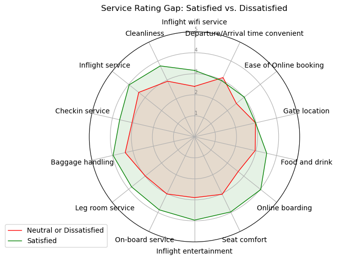
분석 결과:#
Inflight wifi service(기내 와이파이), Online boarding(온라인 탑승수속), Inflight entertainment(기내 엔터테인먼트) 등 디지털 및 편의 서비스 항목에서 만족/불만족 그룹 간 점수 격차가 매우 크다.
반면 Gate location(게이트 위치), Departure/Arrival time convenient(출도착 시간 편의성) 항목은 그룹 간 차이가 상대적으로 작다.
결론: 물리적 운영(게이트, 시간)보다는 디지털 경험과 기내 편의성을 개선하는 것이 만족도 향상에 훨씬 효과적이다.
2. 운영 효율성과 고객 민감도 분석 (지연 시간 분석)#
항공기 지연 시간이 길어질수록 만족도가 어떻게 변화하는지 분석하여, ‘허용 가능한 지연 시간’의 임계점을 파악할 수 있다.
Delay Group |
Satisfaction Rate |
|---|---|
0 min |
0.4725 |
1-15 min |
0.4130 |
16-30 min |
0.3527 |
31-60 min |
0.3564 |
1-2 hr |
0.3524 |
2-3 hr |
0.3659 |
>3 hr |
0.3654 |
분석 결과:#
지연이 없을 때(0분) 만족도 비율은 약 47.2%이다.
1~15분 지연 시 만족도는 41.3%로 급격히 하락하며, 16~30분 지연 시 35.3%까지 떨어진다.
흥미롭게도 30분 이후부터는 지연 시간이 더 길어져도 만족도가 35~36% 수준에서 크게 더 떨어지지 않는다(바닥 효과).
결론: 초기 15분 이내의 지연을 막는 것이 만족도 방어에 가장 중요하다. 이미 30분을 넘겼다면 추가적인 지연 보상보다는 다른 서비스로 만회하는 전략이 필요할 수 있다.
3. 고객 세분화(Segmentation) 및 타겟팅 전략#
고객의 유형(Customer Type), 여행 목적(Type of Travel), 좌석 등급(Class)을 조합하여 세분화된 그룹별 만족도를 분석한다.
Class |
Business Travel |
Personal Travel |
|---|---|---|
Business |
0.7202 |
0.1224 |
Eco |
0.2962 |
0.1020 |
Eco Plus |
0.3933 |
0.0871 |
분석 결과 (만족도 비율):#
Business Class + Business Travel: 만족도 72.0% (핵심 만족 그룹)
Eco Class + Business Travel: 만족도 29.6% (잠재적 불만 그룹)
Eco Class + Personal Travel: 만족도 10.2% (취약 그룹)
결론: 비즈니스석 이용 출장객은 이미 만족도가 높으므로 유지 전략이 필요하지만, 이코노미석을 이용하는 개인 여행객은 만족도가 극도로 낮으므로, 이들을 위한 저비용 고효율 서비스(예: 간편한 모바일 체크인, 기내 와이파이 개선) 도입이 시급하다.
4. 예측 모델링 (Predictive Modeling)#
이 데이터는 satisfaction이라는 타겟 변수가 있으므로, 머신러닝 모델을 통해 다음과 같은 예측이 가능하다.
이탈 예측: 특정 승객의 서비스 평가 패턴을 입력하면 만족/불만족 여부를 예측한다.
주요 인자(Feature Importance) 도출: 랜덤 포레스트나 XGBoost 모델을 사용하여 어떤 변수가 만족도 예측에 가장 큰 기여를 하는지 정량적으로 산출할 수 있다. (앞선 상관관계 분석보다 정교함)
5. 페르소나(Persona) 분석#
데이터의 특성을 기반으로 가상의 고객 프로필을 만들어 맞춤형 전략을 수립할 수 있다.
예시: “알뜰 실속 여행족” (Eco Class, Personal Travel, Price Sensitive) -> 이들은 기내식보다는 좌석 편안함과 엔터테인먼트에 더 민감할 수 있다.
이와 같이 이 데이터셋은 단순한 현황 파악을 넘어, 서비스 투자 우선순위 결정, 타겟 마케팅, 운영 KPI 설정 등 비즈니스 임팩트를 창출하는 분석 도구로 활용될 수 있다.
5. 설문조사 심층 분석 II#
Gemini 분석#
Importance-Performance Analysis(중요도-성과 분석)
항목 |
Importance |
Performance |
|---|---|---|
Online boarding |
0.503557 |
3.250375 |
Inflight entertainment |
0.398059 |
3.358158 |
Seat comfort |
0.349459 |
3.439396 |
On-board service |
0.322383 |
3.382363 |
Leg room service |
0.313131 |
3.351055 |
이 서베이 데이터는 단순 만족도 파악을 넘어, 서비스 전략 수립, 고객 세분화, 그리고 미래 만족도 예측 등 다각적인 분석이 가능하다.
주요 분석 가능한 항목들을 정리하면 다음과 같다.
1. 우선순위 행동 매트릭스 (IPA: Importance-Performance Analysis)#
각 서비스 항목의 중요도(만족도와의 상관관계) 와 성과(평균 점수) 를 2차원 평면에 매핑하여 전략적 우선순위를 도출한다.
분석 방법: X축은 성과(Performance), Y축은 중요도(Importance)로 설정하여 4분면 분석을 수행한다.
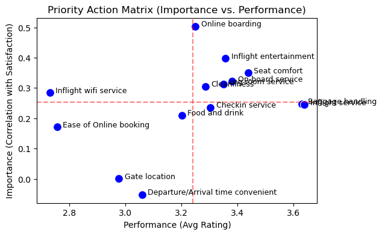
시사점:#
집중 개선 영역 (High Importance, Low Performance):
Inflight wifi service,Ease of Online booking등이 여기에 해당할 가능성이 높다. 이들은 만족도에 큰 영향을 미치지만 현재 평가가 낮으므로 최우선 개선 대상이다.현상 유지 영역 (High Importance, High Performance):
Seat comfort,Inflight entertainment등은 이미 잘하고 있으며 계속 유지해야 할 핵심 강점이다.과잉 투자 영역 (Low Importance, High Performance): 중요도가 낮은데 점수가 높은 항목은 자원을 재배분하여 다른 취약점을 보완하는 데 사용할 수 있다.
2. 인구통계학적 세분화 (Demographic Segmentation)#
고객의 나이, 성별, 여행 목적 등에 따라 만족도가 어떻게 달라지는지 분석하여 타겟 마케팅 전략을 수립한다.
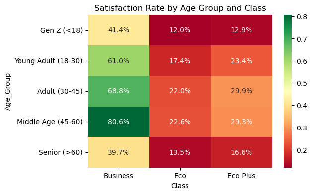
연령대별 분석:#
Z세대/밀레니얼: 디지털 서비스(와이파이, 앱 편의성)에 민감할 수 있다.
중장년층: 좌석 편안함이나 인적 서비스(승무원 태도)를 더 중시할 수 있다.
좌석 등급별 분석:#
비즈니스석: 높은 가격을 지불한 만큼 기대치가 높으며, 특히 프라이버시와 식음료 품질에 민감하다.
이코노미석: 가격 대비 가치(가성비)와 기본적인 편안함(다리 공간)이 중요하다.
3. 컨텍스트 기반 서비스 분석 (Contextual Analysis)#
비행 거리나 지연 상황과 같은 환경적 요인이 만족도에 미치는 영향을 분석한다.
비행 거리(Flight Distance)에 따른 민감도:#
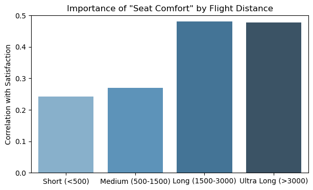
단거리 비행에서는 좌석 편안함이 덜 중요할 수 있지만, 장거리 비행에서는 좌석 편안함(Seat Comfort) 과 엔터테인먼트(Inflight Entertainment) 가 만족도의 결정적 요인이 된다.
지연(Delay) 민감도:#
출발 지연이 15분, 30분, 1시간 늘어날 때마다 만족도가 얼마나 급격히 하락하는지 분석하여 ‘골든 타임’ 을 설정할 수 있다.
4. 고객 충성도 분석 (Loyalty Analysis)#
충성 고객(Loyal Customer)과 비충성 고객(Disloyal Customer)의 행동 패턴 차이를 분석한다.
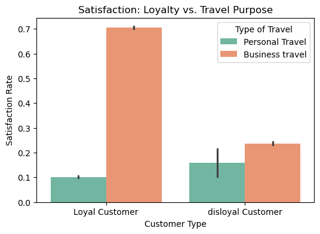
이탈 위험 감지: 비충성 고객이 특히 불만족하는 포인트(Pain Point)를 찾아내어 충성 고객으로 전환시키기 위한 전략을 마련한다.
충성 고객 강화: 충성 고객이 지속적으로 만족하는 요인을 강화하여 브랜드 옹호자로 만든다.
5. 머신러닝 기반 예측 모델링 (Predictive Modeling)#
데이터를 학습하여 미래의 만족도를 예측하거나 주요 인자를 식별한다.
만족도 예측: 승객의 특성과 비행 정보를 입력하면 만족할 확률을 예측한다. 이를 통해 탑승 전 ‘불만족 위험군’을 선별하여 선제적으로 케어(Upgrade, 쿠폰 제공 등)할 수 있다.
특성 중요도(Feature Importance) 산출: 랜덤 포레스트(Random Forest)나 XGBoost 등의 알고리즘을 사용하여 만족도에 영향을 미치는 변수의 순위를 매긴다. 이는 상관관계 분석보다 더 정교한 인사이트를 제공한다.
6. 텍스트 마이닝 (Text Mining) - 데이터에 텍스트 컬럼이 있다면#
만약 주관식 응답 데이터가 포함된다면, 자연어 처리(NLP)를 통해 감성 분석이나 토픽 모델링을 수행하여 수치 데이터로는 알 수 없는 구체적인 불만 사유(예: “승무원이 불친절했다”, “기내식이 너무 짰다”)를 파악할 수 있다. (현재 데이터에는 없지만 추가 수집 시 유용함)
참고: 파이썬 코드#
# 1. 데이터 로딩
import pandas as pd
# 데이터프레임 불러오기
df = pd.read_csv('../Data/train.csv')
# 데이터 확인하기
print("데이터 정보:")
print(df.info())
# 2. 만족도 분석
import pandas as pd
import matplotlib.pyplot as plt
import seaborn as sns
# 만족도(Target)를 수치형으로 변환
df['satisfaction_binary'] = df['satisfaction'].apply(lambda x: 1 if x == 'satisfied' else 0)
# --- 1. 전체 만족도 비율 (Pie Chart) ---
plt.figure(figsize=(5, 5))
satisfaction_counts = df['satisfaction'].value_counts()
plt.pie(satisfaction_counts, labels=satisfaction_counts.index, autopct='%1.1f%%',
startangle=90, colors=['#ff9999','#66b3ff'])
plt.title('Overall Satisfaction Distribution')
plt.show()
# --- 2. 좌석 등급(Class)별 만족도 (Countplot) ---
plt.figure(figsize=(6, 4))
sns.countplot(x='Class', hue='satisfaction', data=df, palette='Set2',
order=['Eco', 'Eco Plus', 'Business'])
plt.title('Satisfaction by Class')
plt.xlabel('Class')
plt.ylabel('Count')
plt.show()
# --- 3. 여행 목적(Type of Travel)별 만족도 (Countplot) ---
plt.figure(figsize=(6, 4))
sns.countplot(x='Type of Travel', hue='satisfaction', data=df, palette='Set2')
plt.title('Satisfaction by Type of Travel')
plt.xlabel('Type of Travel')
plt.ylabel('Count')
plt.show()
# --- 4. 각 서비스 항목과 만족도 간의 상관관계 (Bar Chart) ---
plt.figure(figsize=(8, 5))
# 상관관계 계산
numeric_df = df.select_dtypes(include=['int64', 'float64'])
correlations = numeric_df.corr()['satisfaction_binary'].drop('satisfaction_binary')
# 서비스 관련 변수만 필터링
service_cols = ['Inflight wifi service', 'Departure/Arrival time convenient', 'Ease of Online booking',
'Gate location', 'Food and drink', 'Online boarding', 'Seat comfort',
'Inflight entertainment', 'On-board service', 'Leg room service',
'Baggage handling', 'Checkin service', 'Inflight service', 'Cleanliness']
service_corr = correlations[service_cols].sort_values(ascending=False)
sns.barplot(x=service_corr.values, y=service_corr.index, hue=service_corr.index, palette='coolwarm', legend=False)
plt.title('Correlation between Services and Satisfaction')
plt.xlabel('Correlation Coefficient')
plt.axvline(x=0, color='black', linestyle='-', linewidth=0.5)
plt.show()
# --- 통계 수치 출력 ---
print("Top 5 Correlated Features with Satisfaction:")
print(correlations.abs().sort_values(ascending=False).head(5))
print("\nMean Satisfaction Rate by Customer Type:")
print(df.groupby('Customer Type')['satisfaction_binary'].mean())
# 3. 문항별 기술적 분석
import pandas as pd
import matplotlib.pyplot as plt
import seaborn as sns
import numpy as np
# 분석할 컬럼 그룹 정의 (범주형, 수치형, 설문 항목)
categorical_cols = ['Gender', 'Customer Type', 'Type of Travel', 'Class', 'satisfaction']
numerical_cols = ['Age', 'Flight Distance', 'Departure Delay in Minutes', 'Arrival Delay in Minutes']
survey_cols = ['Inflight wifi service', 'Departure/Arrival time convenient', 'Ease of Online booking',
'Gate location', 'Food and drink', 'Online boarding', 'Seat comfort',
'Inflight entertainment', 'On-board service', 'Leg room service',
'Baggage handling', 'Checkin service', 'Inflight service', 'Cleanliness']
# 1. 범주형 데이터 시각화 (Categorical Data)
fig1, axes1 = plt.subplots(2, 3, figsize=(18, 10))
fig1.suptitle('Distribution of Categorical Variables', fontsize=16)
axes1 = axes1.flatten()
for i, col in enumerate(categorical_cols):
# 경고 방지를 위해 hue에 x축 변수 할당 및 legend=False 설정
sns.countplot(x=col, data=df, ax=axes1[i], hue=col, palette='Set2', legend=False)
axes1[i].set_title(col)
# 막대 위에 빈도수(Count) 숫자 표시
for p in axes1[i].patches:
axes1[i].annotate(f'{p.get_height()}', (p.get_x() + p.get_width() / 2., p.get_height()),
ha='center', va='bottom')
# 빈 서브플롯 제거 (총 6개 칸 중 5개만 사용하므로 마지막 하나 제거)
if len(categorical_cols) < 6:
fig1.delaxes(axes1[5])
plt.tight_layout()
plt.show()
# 2. 수치형 데이터 시각화 (히스토그램)
fig2, axes2 = plt.subplots(2, 2, figsize=(15, 10))
fig2.suptitle('Distribution of Numerical Variables', fontsize=16)
axes2 = axes2.flatten()
for i, col in enumerate(numerical_cols):
# 결측치(NaN) 제거 후 히스토그램 및 밀도 곡선(KDE) 그리기
sns.histplot(df[col].dropna(), kde=True, ax=axes2[i], color='skyblue')
axes2[i].set_title(col)
plt.tight_layout()
plt.show()
# 3. 설문 조사 항목 시각화 (0-5점 척도 막대 그래프)
fig3, axes3 = plt.subplots(4, 4, figsize=(20, 20))
fig3.suptitle('Distribution of Survey Ratings (0-5)', fontsize=16)
axes3 = axes3.flatten()
for i, col in enumerate(survey_cols):
sns.countplot(x=col, data=df, ax=axes3[i], hue=col, palette='viridis', legend=False)
axes3[i].set_title(col)
axes3[i].set_ylabel('') # y축 라벨 제거 (공간 확보)
axes3[i].set_xlabel('') # x축 라벨 제거
# 남은 빈 서브플롯들 제거 (총 16개 칸 중 사용하지 않는 칸 삭제)
for j in range(len(survey_cols), 16):
fig3.delaxes(axes3[j])
plt.tight_layout()
plt.show()
# 요약 통계 테이블 생성 (Describe)
desc_cat = df[categorical_cols].describe().transpose()
desc_num = df[numerical_cols].describe().transpose()
desc_survey = df[survey_cols].describe().transpose()
print("범주형 데이터 요약 (Categorical Summary):")
print(desc_cat)
print("\n수치형 데이터 요약 (Numerical Summary):")
print(desc_num)
print("\n설문 항목 데이터 요약 (Survey Items Summary):")
print(desc_survey)
# 설문 항목 중 0점 개수 확인 (0점은 '해당 없음'일 가능성이 높음)
zero_counts = (df[survey_cols] == 0).sum()
print("\n각 서비스 항목별 0점(해당 없음?) 개수:")
print(zero_counts)
# 4. 심층 분석 I
import pandas as pd
import numpy as np
import matplotlib.pyplot as plt
import seaborn as sns
from math import pi
# --- 전처리 (Preprocessing) ---
# 만족도를 이진 변수로 변환 (만족한 경우 1, 그렇지 않으면 0)
df['satisfaction_binary'] = df['satisfaction'].apply(lambda x: 1 if x == 'satisfied' else 0)
# 도착 지연(Arrival Delay)의 결측값을 0으로 채움 (이 개요 분석에서는 영향이 미미함)
df['Arrival Delay in Minutes'] = df['Arrival Delay in Minutes'].fillna(0)
# --- 분석 1: 서비스 격차 분석 (레이더 차트) ---
# 서비스 관련 컬럼 선택
service_cols = ['Inflight wifi service', 'Departure/Arrival time convenient', 'Ease of Online booking',
'Gate location', 'Food and drink', 'Online boarding', 'Seat comfort',
'Inflight entertainment', 'On-board service', 'Leg room service',
'Baggage handling', 'Checkin service', 'Inflight service', 'Cleanliness']
# 만족 그룹과 불만족 그룹의 평균 점수 계산
means = df.groupby('satisfaction')[service_cols].mean().reset_index()
# 레이더 차트를 위한 데이터 준비
categories = list(means.columns[1:])
N = len(categories)
# 각 축의 각도 계산
angles = [n / float(N) * 2 * pi for n in range(N)]
angles += [angles[0]] # 차트를 닫기 위해 시작점 추가
fig = plt.figure(figsize=(12, 6))
# 레이더 차트 생성
ax = plt.subplot(1, 2, 1, polar=True)
ax.set_theta_offset(pi / 2)
ax.set_theta_direction(-1)
# X축 라벨 설정
plt.xticks(angles[:-1], categories)
ax.set_rlabel_position(0)
plt.yticks([1, 2, 3, 4, 5], ["1", "2", "3", "4", "5"], color="grey", size=7)
plt.ylim(0, 5)
# '중립 또는 불만족(Neutral or Dissatisfied)' 데이터 플롯
values_dis = means.loc[means['satisfaction'] == 'neutral or dissatisfied', categories].values.flatten().tolist()
values_dis += [values_dis[0]]
ax.plot(angles, values_dis, linewidth=1, linestyle='solid', label='Neutral or Dissatisfied', color='red')
ax.fill(angles, values_dis, 'red', alpha=0.1)
# '만족(Satisfied)' 데이터 플롯
values_sat = means.loc[means['satisfaction'] == 'satisfied', categories].values.flatten().tolist()
values_sat += [values_sat[0]]
ax.plot(angles, values_sat, linewidth=1, linestyle='solid', label='Satisfied', color='green')
ax.fill(angles, values_sat, 'green', alpha=0.1)
plt.legend(loc='upper right', bbox_to_anchor=(0.1, 0.1))
plt.title('Service Rating Gap: Satisfied vs. Dissatisfied', y=1.08)
plt.show()
# --- 분석 2: 지연이 만족도에 미치는 영향 ---
# 지연 시간 구간화(Binning)
bins = [-1, 0, 15, 30, 60, 120, 180, 10000]
labels = ['0 min', '1-15 min', '16-30 min', '31-60 min', '1-2 hr', '2-3 hr', '>3 hr']
df['Delay_Group'] = pd.cut(df['Arrival Delay in Minutes'], bins=bins, labels=labels)
# 지연 그룹별 만족률 계산
delay_satisfaction = df.groupby('Delay_Group', observed=False)['satisfaction_binary'].mean()
print("\n지연 영향 데이터:")
print(delay_satisfaction)
# --- 분석 3: 고객 세그먼테이션 히트맵 ---
# 좌석 등급(Class) 및 여행 타입(Type of Travel)에 따른 만족률 피벗 테이블
segment_pivot = df.pivot_table(index='Class', columns='Type of Travel', values='satisfaction_binary', aggfunc='mean')
print("\n세그먼트별 만족률 (좌석 등급 x 여행 타입):")
print(segment_pivot)
# 5. 심층 분석 II
import pandas as pd
import matplotlib.pyplot as plt
import seaborn as sns
import numpy as np
# --- 전처리 (Preprocessing) ---
# 만족도를 이진 변수로 변환 (만족: 1, 그 외: 0)
df['satisfaction_binary'] = df['satisfaction'].apply(lambda x: 1 if x == 'satisfied' else 0)
service_cols = ['Inflight wifi service', 'Departure/Arrival time convenient', 'Ease of Online booking',
'Gate location', 'Food and drink', 'Online boarding', 'Seat comfort',
'Inflight entertainment', 'On-board service', 'Leg room service',
'Baggage handling', 'Checkin service', 'Inflight service', 'Cleanliness']
# --- 분석 1: 중요도-성취도 분석 (IPA) 매트릭스 ---
# 중요도(Importance): 만족도와의 상관계수 (Correlation)
# 성취도(Performance): 평균 평점 (Average Rating)
correlations = df[service_cols + ['satisfaction_binary']].corr()['satisfaction_binary'].drop('satisfaction_binary')
means = df[service_cols].mean()
ipa_df = pd.DataFrame({'Importance': correlations, 'Performance': means})
# 그래프 1 생성
plt.figure(figsize=(6, 4))
sns.scatterplot(x='Performance', y='Importance', data=ipa_df, s=100, color='blue')
# 라벨 추가
for i in range(ipa_df.shape[0]):
plt.text(ipa_df['Performance'].iloc[i]+0.02,
ipa_df['Importance'].iloc[i],
ipa_df.index[i], fontsize=9)
# 사분면 기준선 추가 (평균을 기준으로 설정)
plt.axvline(x=ipa_df['Performance'].mean(), color='red', linestyle='--', alpha=0.5)
plt.axhline(y=ipa_df['Importance'].mean(), color='red', linestyle='--', alpha=0.5)
plt.title('Priority Action Matrix (Importance vs. Performance)')
plt.xlabel('Performance (Avg Rating)')
plt.ylabel('Importance (Correlation with Satisfaction)')
plt.show()
# --- 분석 2: 인구통계 - 연령대 및 좌석 등급별 만족도 ---
# 연령대 구간화 (Binning)
age_bins = [0, 18, 30, 45, 60, 100]
age_labels = ['Gen Z (<18)', 'Young Adult (18-30)', 'Adult (30-45)', 'Middle Age (45-60)', 'Senior (>60)']
df['Age_Group'] = pd.cut(df['Age'], bins=age_bins, labels=age_labels)
pivot_age_class = df.pivot_table(index='Age_Group', columns='Class', values='satisfaction_binary', aggfunc='mean', observed=False)
# 그래프 2 생성
plt.figure(figsize=(6, 4))
sns.heatmap(pivot_age_class, annot=True, cmap='RdYlGn', fmt='.1%')
plt.title('Satisfaction Rate by Age Group and Class')
plt.show()
# --- 분석 3: 맥락 분석 - 비행 거리에 따른 "좌석 편안함"의 중요도 ---
# 장거리 비행일수록 좌석 편안함이 더 중요한가?
# 거리 구간화 (Binning)
dist_bins = [0, 500, 1500, 3000, 10000]
dist_labels = ['Short (<500)', 'Medium (500-1500)', 'Long (1500-3000)', 'Ultra Long (>3000)']
df['Dist_Group'] = pd.cut(df['Flight Distance'], bins=dist_bins, labels=dist_labels)
# 각 거리 그룹별 '좌석 편안함'과 '만족도' 간의 상관계수 계산
comfort_corrs = []
for group in dist_labels:
sub_df = df[df['Dist_Group'] == group]
if len(sub_df) > 0:
corr = sub_df['Seat comfort'].corr(sub_df['satisfaction_binary'])
comfort_corrs.append(corr)
else:
comfort_corrs.append(0)
# 그래프 3 생성
plt.figure(figsize=(7, 4))
sns.barplot(x=dist_labels, y=comfort_corrs, hue=dist_labels, palette='Blues_d', legend=False)
plt.title('Importance of "Seat Comfort" by Flight Distance')
plt.ylabel('Correlation with Satisfaction')
plt.ylim(0, 0.5)
plt.show()
# --- 분석 4: 고객 충성도 세분화 ---
# 여행 목적(Travel Type)에 따른 충성/비충성 고객의 만족도 비교
# 그래프 4 생성
plt.figure(figsize=(6, 4))
sns.barplot(x='Customer Type', y='satisfaction_binary', hue='Type of Travel', data=df, palette='Set2')
plt.title('Satisfaction: Loyalty vs. Travel Purpose')
plt.ylabel('Satisfaction Rate')
plt.show()